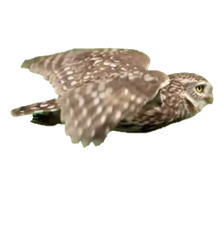
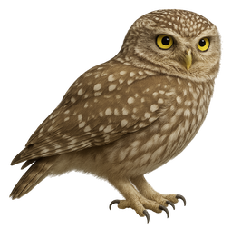
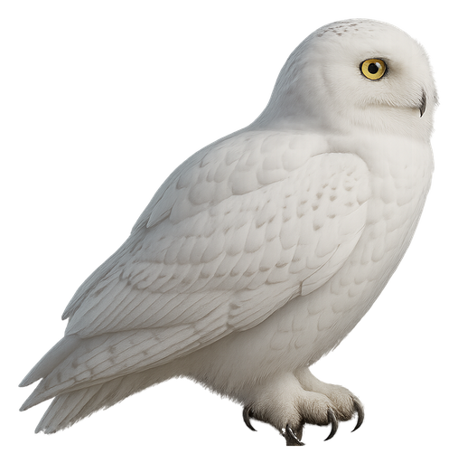

fly.webp 36 cells @ 24 fps (facing right)
scaleX(-1)

glide.webp

perched@256.webp

perched.webp shown at 50%
fly.webp
scaleX(-1)
glide.webp
perched@256.webp
Red dots = manifest anchors (fly/glide: body centroid; perched: feet).